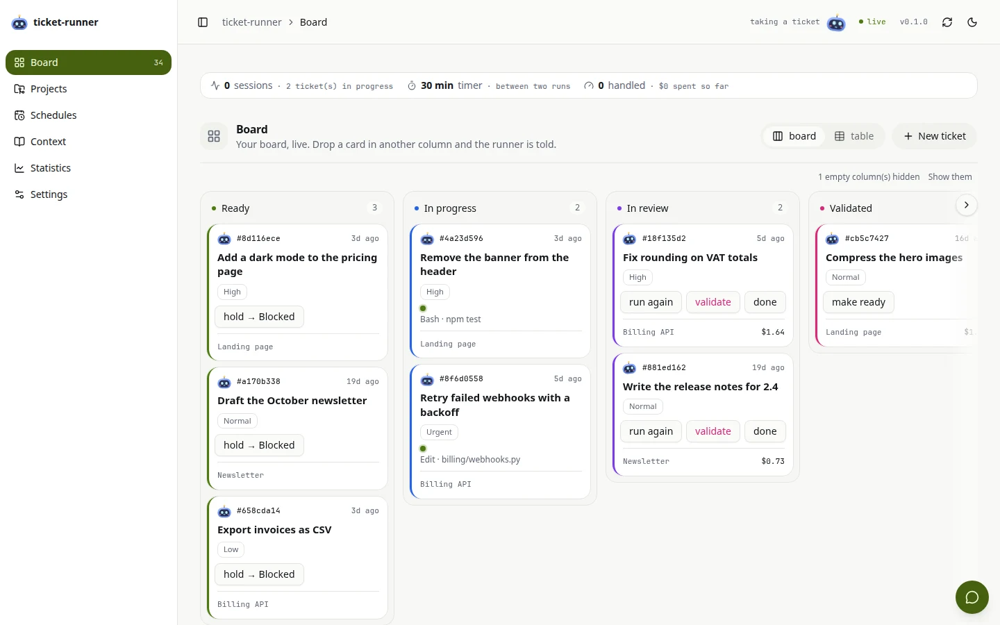
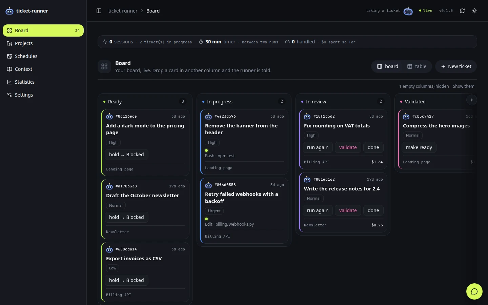
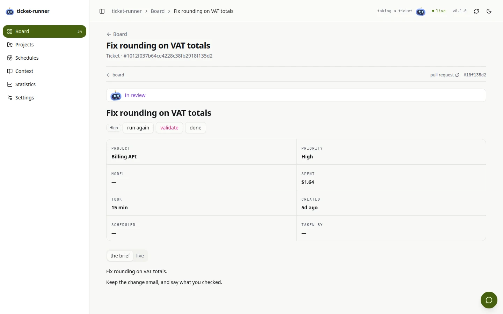
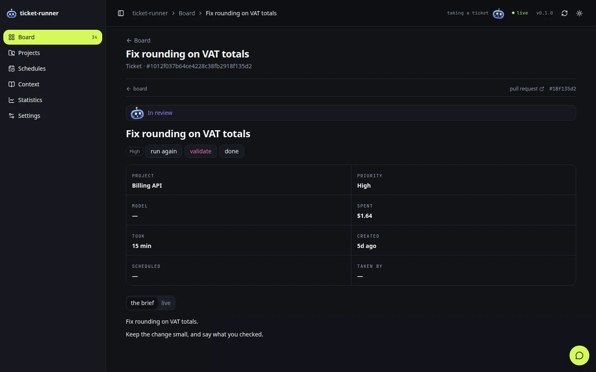
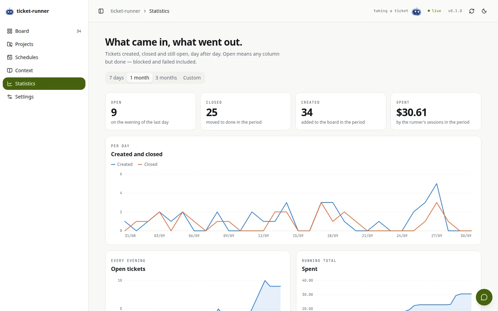
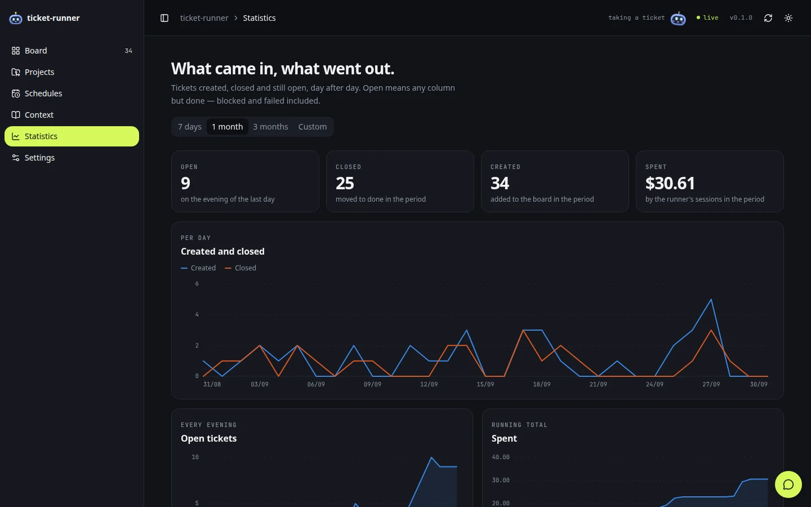

A harness around Claude Code that runs your tasks on your machine — code, writing, actions, posts.
Write the ticket on Ponos’s own board — the console, or a folder of
Markdown files. He brings back a pull request, a text, an action carried out or a post
ready to go. You answer in a word, even from your phone, and nothing ships until you say yes.
Console: limit the Done columnAnnounce version 1.4 on X
Status
Ready
Type
CodePublication
Project
ponos
2Ponos does iton your machine · Claude Code
Ponos
Next in line…Working on it…✓ Done, tests passpost ready
Run again — he picks it up with your note
3You decidenothing ships without your yes
Done keeps its last 30 tickets“Ponos 1.4 is out”PR #96 · tests passA post for X · 212 characters
In reviewMergedPublished
✓ You said yesValidateRun again
Ponos is named after the Greek god of toil: he does the tedious part, you keep the decisions.
One ticket, from Ready to Done, in a minute. Sound on: English voice-over, subtitles in the picture.
How it works
The whole loop, in four gestures.
Two of them are yours, and each takes a few seconds. The two in between are Ponos's.
127.0.0.1:8787 — the console
01 · you
You write the ticket
What you would tell a colleague, on your board — then you move it to Ready.
02 · Ponos
Ponos does it
While you do something else: a pull request on its own branch, a text written into the ticket, an action carried out.
03 · you
You read, and answer in a word
A question or a result reaches you — in the console, or on your phone. oui is a whole answer.
04 · Ponos
He delivers
Move it to Validated: the pull request is merged, the post is published — and only then is it Done.
Why hand it over
Three things it does that a to-do list does not.
It asks first
A doubt stops it.
A ticket nobody typed is classified before it runs, and a hesitation sends it back to you with the question. An action stops at its first doubt — a wrong account, a value the ticket does not give — rather than act on a guess.
You keep the hand
Nothing goes out without you.
No pull request is merged and nothing is published until you move the ticket to Validated. And it all runs on your machine, each ticket in a disposable worktree — your own checkout is never touched.
It comes to you
“oui” is enough.
Ponos · TelegramWhich header — the dashboard one or the public site?
the dashboard
✓ noted on “Le header” — the next run carries on.
When a ticket needs a decision, the question reaches you on Telegram or Slack, and your reply lands on the ticket.
Runs onClaude Codeand a board of its own. Plugs intoNotionGitHubTelegramSlackOpenRouter— only if you want.
What it does
Not only code. Four kinds of task.
The ticket’s type decides the road — pick it, or let a small model read the ticket and choose. A doubt stops it before anything runs.
Code
A pull request.
ticketConsole: limit the Done column
Its own branch, on a disposable worktree; the tests run. Merged when you validate.
Writing
A text, in the ticket.
ticketDraft the October newsletter
Release notes, a brief, a summary: written into the ticket, ready to copy. No repository needed.
External action
Done, and logged.
ticketAdd the DNS records for the new domain
In the browser or a service’s settings, with every change logged — before, after, what was checked. It stops at its first doubt.
Publication
Prepared, then published.
ticketPost the 1.2 release on LinkedIn
A post, a site put online, a message sent: prepared and shown to you first. Published once you say yes.
Tickets that come back
Every Monday, review the dependencies — a schedule writes the ticket and moves it to Ready on its own.
A chat with your machine
Create a ticket for the SQLite migration and make it ready — the console’s chat is a Claude Code session in your workspace, and it does it.
Projects, without ceremony
A project is a name and a brief. Give it a GitHub link and the repository is cloned the first time a ticket needs it; give it none and its tickets come back as text.
The console
A board of its own.
Ponos needs nobody else’s board. The console, on 127.0.0.1, is where you write a ticket, drag it to Ready and watch its session live — with a chat with your whole workspace beside it. Under it, the board is a folder of Markdown files: grep, your editor and git read it too.
in English or French · light or dark






The current console, on a demonstration board. ponos serve — the installer already starts it. Everything it does →
Integrations
Plugs in where you already work. If you want.
Ponos needs Claude Code and nothing else. Each of these is one more token in the settings, and none of them is a requirement.
Notion
optional
Your board in Notion. Tickets, projects and schedules become Notion databases, and every report is written back on the ticket’s page.
GitHub
optional
Pull requests. A code ticket comes back as one, through gh, and is merged on your yes. Writing, actions and posts need none of it.
Telegram · Slack
optional
Your phone. A question or a result reaches you there, and your answer — oui will do — lands on the ticket.
OpenRouter
optional
Every other model. One key: a GPT writes the copy, a model transcribes a voice note — or the sessions themselves run on the model you name.
Notion
Your board in Notion.
Tickets are rows in a Notion database: share one page with a Notion integration, and init builds the rest under it. Ponos reads the tickets you write there, and writes back on the same page.
You write where you already work. Tickets are rows in a Notion database; their Project points at the repository — or at none, for a text.
He reports on the ticket itself. Every run leaves a folded log in the page — each file he read, each command he ran, what he said — and a comment with the pull request, the time and the cost.
A text comes back as text. Release notes, a newsletter, a post: written straight into the ticket, ready to copy.
Your column is the go-ahead. Drag the card to Validated: he merges or publishes. Not before.
It installs the ponos command, a timer that hands Ponos the ready tickets, and the console. Beyond Claude Code, nothing to sign up for.
$ curl -LsSf https://raw.githubusercontent.com/SalvadorCardona/ponos/main/install.sh | sh
Then, the board
Make it a folder of Markdown files: in the console, Settings › Where the board lives › markdown — or one line under [storage]. Then write your first ticket in the console.
The installer still asks for a Notion token first: press Enter to skip it. Rather Notion? Your board in Notion.
# [storage] mode = "markdown"$ ponos config
$ ponos doctor
What it needs
Linux, with systemd in the user session;
python3 ≥ 3.11 — standard library only, nothing to install;